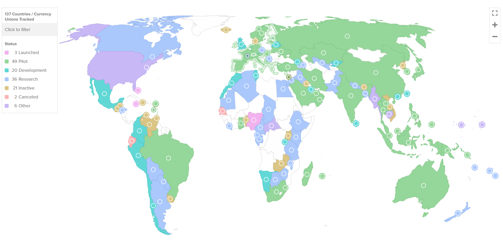

Section IX: Applications and Synthesis · Lesson 02-AS
CBDCs and Stablecoins
Agenda
- Types of Digital Money — CBDCs, stablecoins, and traditional cryptocurrencies defined
- Trust Architecture — how control is built into (or out of) each system
- Central Bank Digital Currencies — who is building them and why
- Global Payment Infrastructure — the rails that move money across borders
- Stablecoins — mechanics, major players, and real-world use cases
- Why Governments Care — sovereignty, sanctions, and the permission layer
- Case Study: USDT on Tron — the framework applied
Objectives
By the end of this lesson, you will be able to:
Distinguish CBDCs, stablecoins, and cryptocurrencies by issuer, infrastructure, and state visibility.
Apply the currency layer vs payment infrastructure layer framework to analyze threats to state control.
Assess geopolitical implications: sovereignty, sanctions, capital flows, and infrastructure fragmentation.
Types of Digital Money
| Type | Issuer | Infrastructure | State Visibility | Example |
|---|---|---|---|---|
| Central Bank Digital Currency (CBDC) | Central bank | State-controlled digital ledger | High — programmable, traceable | China e-CNY |
| Stablecoins | Private company or protocol | Public or permissioned blockchain | Varies — USDC (moderate) to DAI (low) | USDT, USDC, DAI |
| Traditional Cryptocurrencies | Protocol (no single issuer) | Permissionless blockchain | Low — pseudonymous | Bitcoin, Ethereum |
The issuer and the infrastructure are separable — that separation is what creates geopolitical tension.
Not all governments pursue all three: China banned private stablecoins (February 2026); the US legislatively blocked a federal CBDC (July 2025).
Central Bank Digital Currencies (CBDCs)
137 countries (98% of global GDP) are exploring a CBDC; 72 are in advanced stages; 49 pilots are active worldwide.
All CBDC designs are permissioned by definition — no sovereign builds on infrastructure it cannot control.
Retail CBDCs: public-facing digital currency for citizens and businesses.
Wholesale CBDCs: interbank settlement systems for financial institutions.
Trust Architecture: CBDCs vs Permissionless Systems
CBDC: Hierarchical Trust (PKI-like)
- Trust flows downward from a root authority
- Every participant is credentialed by a higher authority
- The root can revoke at any level
- No participation without authorization
Permissionless: Distributed Trust (No CA)
- Trust is emergent from consensus, not delegated
- Anyone can generate keys and participate
- No single entity can revoke or freeze
- Security from cryptography + economics, not authority
Global CBDC Landscape

- 3 launched, 49 pilots, 20 in development, 36 researching — the US is an outlier, having legislatively blocked a retail CBDC.
CBDC Technical Platforms
| Platform | Type | Permission Model | CBDC Users |
|---|---|---|---|
| Hyperledger Fabric | Permissioned DLT | Private membership (MSP) | Some pilots, enterprise |
| Hyperledger Besu | Enterprise Ethereum | Permissioned or public | Nigeria (eNaira), Brazil (Drex) |
| Hyperledger Iroha | Permissioned DLT | Role-based access | Cambodia (Bakong) |
| R3 Corda | Distributed ledger | Permissioned | Sweden (e-Krona), Canada (Jasper) |
| Quorum | Ethereum fork | Consortium | Singapore (Ubin), South Africa |
| Tezos | Public blockchain | Permissionless | France wholesale experiments |
| mBridge Ledger | Custom CBDC DLT | Central bank only | China, UAE, Thailand, HK, Saudi Arabia |
| Bitt Platform | Proprietary | Central bank controlled | DCash (ECCU) |
| eCurrency Mint | Centralized | Central bank controlled | Jamaica (JAM-DEX) |
Global Payment Infrastructure: Overview
Money moving across borders travels on rails — messaging and settlement systems that were built long before blockchain existed.
Two functions: messaging (instructions about who pays whom) and settlement (the actual movement of value). These are often separate systems.
The dominant rails are American: SWIFT carries messages; Fedwire and CHIPS settle dollars. Foreign banks reach the dollar system through US correspondent banks — every layer is a potential choke point.
Sanctions power flows from infrastructure control: cutting a country off SWIFT or US correspondent banking is one of the most powerful non-military tools available.
Alternatives are emerging: CIPS (China), SPFS (Russia), and mBridge (CBDC settlement) each reduce dependence on US-controlled infrastructure.
The rise of digital money — stablecoins on permissionless chains, CBDCs on sovereign ledgers — is inseparable from this competition for infrastructure control.
Global Payment Infrastructure: Compare and Contrast
| System | Description | Operator | Function | Reach | US Leverage | Key Limitation |
|---|---|---|---|---|---|---|
| SWIFT | The global “postal service” for bank-to-bank financial messages; does not move money itself | SWIFT (Belgium, US-influenced) | Messaging — carries transfer instructions between banks | 11,000+ institutions, 200+ countries | High — most dollar transactions clear through US correspondents | Messaging only; doesn’t settle. Disconnection is a major sanction tool (Russia 2022) |
| Fedwire / CHIPS | The US domestic systems where dollars actually settle; the foundation of global dollar clearing | Federal Reserve / The Clearing House (US) | Settlement — where dollars actually move | US domestic + international dollar clearing | Maximum — the dollar’s home rails | Only handles USD; foreign banks need US correspondents to access |
| CIPS | China’s cross-border yuan system; combines messaging and settlement, reducing dependence on SWIFT | People’s Bank of China | Messaging + settlement for yuan cross-border transactions | 1,400+ institutions, 110+ countries | Low — operates independently of US infrastructure | Limited to yuan-denominated transactions; still growing reach |
| SPFS | Russia’s SWIFT replacement, built after Crimea sanctions to ensure domestic banks could still communicate | Central Bank of Russia | Messaging — Russia’s SWIFT alternative (est. 2014) | ~550 institutions, mostly Russia + former Soviet states | None — built to avoid US/EU leverage | Very limited international reach; not widely trusted outside allies |
| mBridge | A new model: central banks settle directly in each other’s digital currencies, no correspondent banking needed | Consortium (China, UAE, Thailand, HK, Saudi Arabia) | Direct CBDC-to-CBDC settlement — bypasses correspondent banking | Pilot stage; 5 central banks + observers | None — settles without touching dollar infrastructure | Still experimental; governance and scaling unresolved |
- SWIFT + Fedwire/CHIPS = the current US-centered system. CIPS, SPFS, and mBridge = emerging alternatives. The fragmentation is already underway.
Stablecoins: Types and Mechanisms
Fiat-collateralized: reserves of dollars or equivalents back each token (USDT, USDC).
Crypto-collateralized: on-chain collateral, often over-collateralized (DAI).
Algorithmic: supply adjustments attempt to maintain peg without full collateral.
The collateral model determines redemption risk, transparency, and regulatory surface.
Trust Architecture: The Stablecoin Hybrid
- Issuer layer: centralized, CA-like — can mint, freeze addresses, comply with sanctions (USDC) or not (USDT offshore)
- Network layer: permissionless, no CA — anyone can receive, hold, and transfer tokens without identity verification
- The gap: issuer can freeze known addresses reactively, but cannot gate participation at the network level — users transact peer-to-peer without issuer approval
- This hybrid is why stablecoins are the most contested category — governments have partial leverage (issuer) but not full control (network)
Major Stablecoins and Use Cases
USDT (Tether): largest by volume; dominant on Tron for emerging-market payments.
USDC (Circle): US-regulated; can freeze addresses; sanctions-compliant.
DAI (MakerDAO): decentralized governance; crypto-collateralized; permissionless.
Use cases: DeFi liquidity, international payments, crypto market settlement, inflation hedging.
In practice: shops in Bolivia price goods in USDT; Venezuela’s economy is substantially rewired to stablecoins; Iran’s citizens use Tron-based USDT to hedge a collapsing rial.
CBDCs vs Cryptocurrencies
| Dimension | CBDCs | Cryptocurrencies (Bitcoin, Ethereum) |
|---|---|---|
| Issuer | Central bank (state liability) | No single issuer (protocol rules) |
| Infrastructure | Permissioned — state controls nodes, validation, participation | Permissionless — anyone can run a node, validate, transact |
| Identity | KYC required; state knows participants | Pseudonymous; no identity gate at protocol level |
| Supply control | Central bank sets monetary policy | Fixed or algorithmic supply; no policy discretion |
| Censorship | State can freeze, block, or reverse transactions | Censorship-resistant by design; no single point of control |
| Privacy | Design choice — ranges from cash-like to fully traceable | Pseudonymous on-chain; privacy depends on chain and user behavior |
| Cross-border | Requires bilateral or multilateral agreements (e.g., mBridge) | Borderless by default; no permission needed |
| Legal status | Legal tender in issuing jurisdiction | Varies by jurisdiction — legal, restricted, or banned |
- CBDCs extend state control into digital infrastructure. Cryptocurrencies remove the state from the loop entirely. Stablecoins sit between them — which is why they are the most contested.
Why Governments Care
Monetary sovereignty: control over currency issuance and monetary policy transmission.
Payment system modernization: faster, cheaper, more resilient domestic payments.
Financial inclusion: reaching unbanked populations with digital infrastructure.
Sanctions enforcement and capital flow control: maintaining the state’s ability to restrict and surveil financial activity.
The Permission Layer: Three Challenges to State Control
Bitcoin/Ethereum challenge the currency layer — they propose alternative units of value. A slow, theoretical threat for most major economies.
Stablecoins challenge the payment infrastructure layer — they distribute existing currencies outside sovereign banking channels. An immediate, operational threat.
CBDCs are the state’s attempt to own both layers — the currency and the rails.
Case Study: USDT on Tron
Tron carries a large share of USDT transfers—low fees enable small-value payments.
Functions as de facto dollar infrastructure in economies with capital controls or unstable currencies — Venezuela collects ~80% of oil revenue in USDT; Bolivia shops display USDT price tags.
Local governments lack visibility and control; the US has limited reach over Tron validators.
Demonstrates the gap between issuer control (Tether froze $182M in a single action, Jan 2026) and network control (no one entity controls Tron).
mBridge: A Test Case
- Cross-border payments still rely on correspondent banks, messaging layers, and intermediary checkpoints
- mBridge began in 2021 through the Bank for International Settlements (BIS) Innovation Hub, with China, Hong Kong, Thailand, and the UAE; Saudi Arabia later joined as a full participant
- mBridge asks: can central banks settle more directly on a shared digital platform using their own currencies?
mBridge So Far
- In 2021, the prototype showed that transfers and foreign exchange (FX) transactions could settle in seconds, run 24/7, and lower costs
- In 2022, the pilot handled real value: 20 banks completed 164 transactions worth more than $22 million
- In 2024, BIS said mBridge had reached minimum viable product (MVP) stage: usable for broader testing, but not yet a mature global production system
- Cross-border rule alignment remains a friction point: Countries still have to agree on compliance, data visibility, dispute handling, and network membership